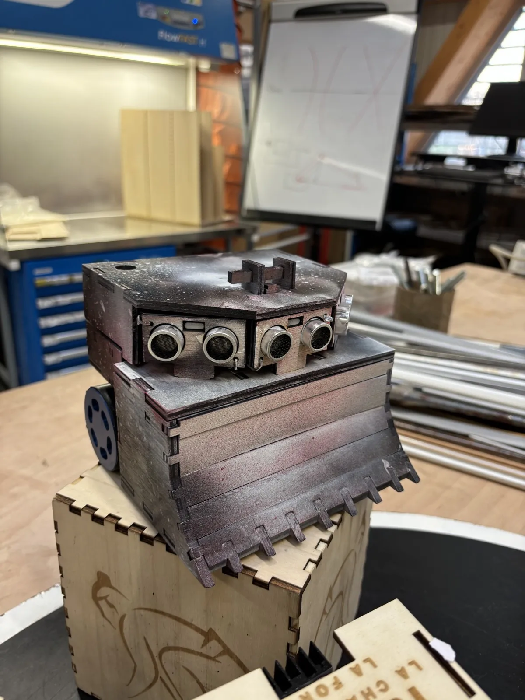
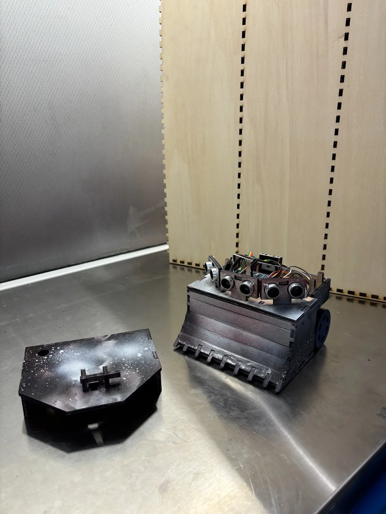
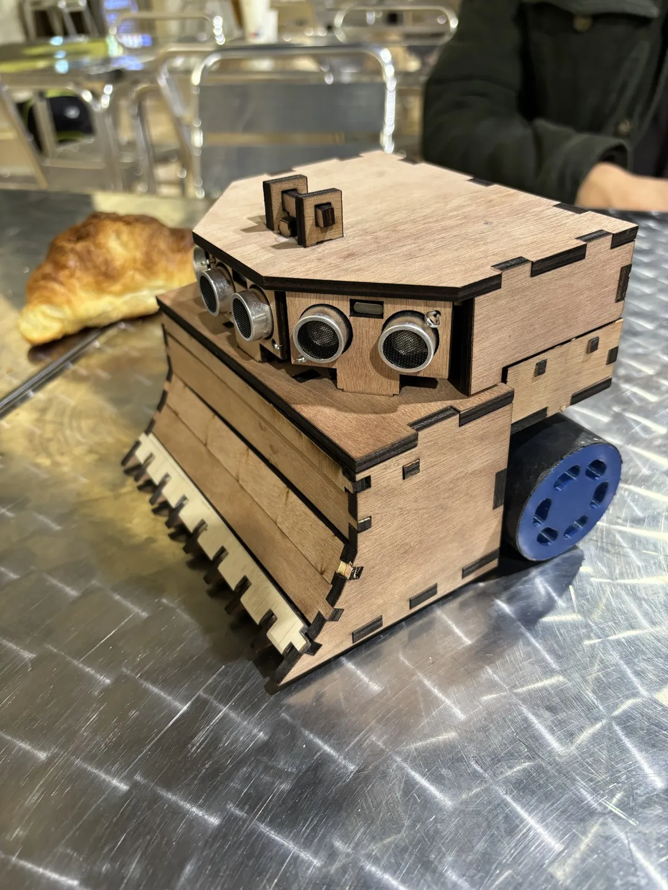

Yotaq, sumo robot
An autonomous robot that has to find its opponent on a 77 cm arena and push it out, without going out itself. Under 1 kg, 150 x 150 mm, a 127-euro budget and 90% of recyclable parts. In a team of 3, I was the main programmer of the Arduino logic and the customer contact.

The problem
The customer asked for a sumo robot meeting a precise specification: mass strictly under 1000 g, 150 mm wide by 150 mm long, at least 90% of recyclable or reusable components, and a cost strictly under 127 euros.
The robot has to move on the dohyo without going out, detect the opponent and push it out of the area. So everything is about trade-offs: speed or torque, weight or strength.
What I did
Testing each component, then the whole
The first step was to write a small test program per component: one for the ultrasonic sensors, one for the infrared sensors, one for the motors. Once each element was validated on its own, they were tested together. This method made it possible to rule out from the start the sensors that were not working.
A simple strategy: search, then attack
The robot is designed for power rather than speed, and the code follows the same idea: simple and reliable.
- Search mode: the robot spins on the spot to sweep the dohyo with its three ultrasonic sensors.
- Attack mode: as soon as one of the three sensors sees something closer than 40 cm, both motors go at full power towards the opponent.
- Edge of the dohyo: four infrared sensors (two at the front, two at the back) detect the white line so the robot stays inside the area.
- Start: a start module receives the infrared signal of a remote and launches the fight through an interrupt.
Each distance is the median of three readings, to remove the outliers. The three ultrasonic sensors share the same trigger pin, which saves pins on the Arduino.

The rest of the robot, done by my teammates
The chassis is made of laser-cut wood assembled with finger joints, with no screws or glue, to stay easy to take apart and recyclable. Two 3D-printed driving wheels and a front blade that goes under the opponent. The geared motors have a 90:1 ratio: torque was preferred to speed, in order to push. A custom PCB connects the Arduino, the L298N H-bridge and the sensors.
A choice to justify
At the beginning of the project, it was proposed to use rotation-speed sensors so that both wheels turn at the same speed and the robot drives straight. We made some tests: on such a small dohyo, a slight speed difference between the motors changes almost nothing to the course.
In addition, there were not enough pins left on the Arduino, so a multiplexer would have had to be bought, which would have cut into the budget. And as the strategy is to spin on the spot then drive forward, these sensors brought almost nothing. This is why they were not used.
Results
- 643 g
- total mass (limit: 1000 g)
- 93%
- of the mass recyclable or reusable (target: 90%)
- 0.28 m/s
- top speed, with 90:1 geared motors
- 2nd
- place in the tournament
The robot finished second. During the fights, an electronic problem disturbed the system, and at some point the sensors probably could not see the opponent any more.

The tech, in plain words
- Dohyo
- The arena of sumo robot fights: a 77 cm disc with a white band around it.
- Ultrasonic sensor
- It sends an inaudible sound and measures the time of the echo to work out a distance. Here, it is used to spot the opponent.
- Infrared sensor
- It tells a light surface from a dark one. Here, it detects the white band at the edge of the dohyo.
- H-bridge
- The circuit that lets the Arduino turn a motor one way or the other and set its power.
- Interrupt
- A signal that makes the program react straight away, without waiting for the end of the current loop.